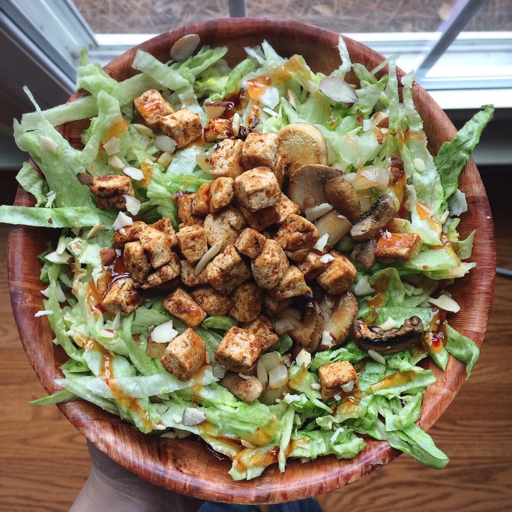

Chipotle Tofu Salad
Hiii giant chipotle tofu salad! I seem to be experiencing a brief love affair with huge salads again. Maybe it's the sign of spring approaching? It's not really gotten any warmer though, so... I doubt it.
I'm headed to NYC this weekend!! I can NOT wait. I am excited to do allll the things. My mom will be there with me, but even more exciting, I get to spend the weekend with Leah!! Aaaand its her birthy-dayyy. I just saw her last fall but it feels like too long ago. Always too long away from her.
Two vegans left wild & unattended in NYC. So basically the weekend is gonna be 1) eating 2) exploring parks 3) eating more 4) shopping for food 5) eating again.... CAN'T WAIT. I know I HAVE to eat at Beyond Sushi, Dirt Candy, Souen, Blossom Vegan Restaurant, Little Choc Apothecary, and get an infamous NYC bagel, hopefully a rainbow one from The Bagel Store!!! I also want to find a SUSHI BURRITO HNGG. It's gonna be awesome. Best part is that Leah and I are having a belated Galentine's Day dinner :)
My mom and I may also go see a show on broadway, but I'm not sure. A cousin of mine moved to NYC a few years ago so we will visit her for a bit I'm sure. So much to do in so little time!!
I'm making sure to eat up as much of my perishable food as possible before I go, because I HATE wasting fresh produce. Anyone else?? Just me? It gives me like...actual anxiety ha. haha. yes... Soo.. this salad was born! I'd say it comes very close in deliciousness to the Vegan Asian Chicken Salad I made last week. What do you think?

Chipotle Tofu Salad
Serves: 1
-
1 small head of lettuce
-
4 oz firm tofu, diced
-
1/2 tsp chili powder
-
1/4 tsp garlic
-
dash of cayenne pepper
-
2 oz mushrooms, sliced
-
2 oz onion, diced
-
1 TBSP sliced almonds
-
1-2 TBSP sweet chili sauce
-
First, prepare the tofu! I cut mine into small cubes first. Spray a pan with nonstick spray and toss the diced tofu inside.
-
Add the chili powder, garlic, and cayenne pepper (add to desired spicy-level) as well as the mushrooms and onions. Cook over a low/medium heat, more or less using my "crispy tofu method" to lightly brown the edges of the tofu.
-
While the tofu and vegetables are cooking, cut your lettuce into small shreds, wash, and toss into a medium/large bowl. Once the tofu and veggies are cooked, add to the bowl.
-
Top the salad with almonds (great add!) and sweet chili sauce as your dressing. Enjoy!